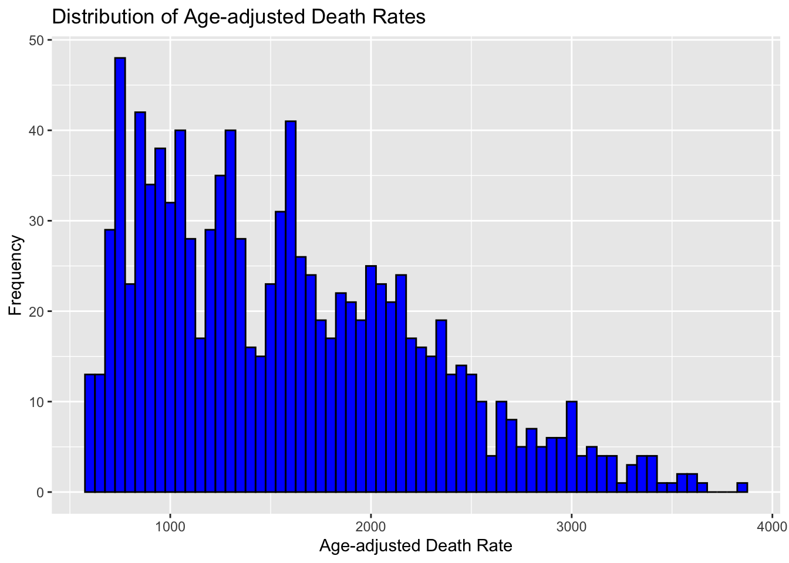
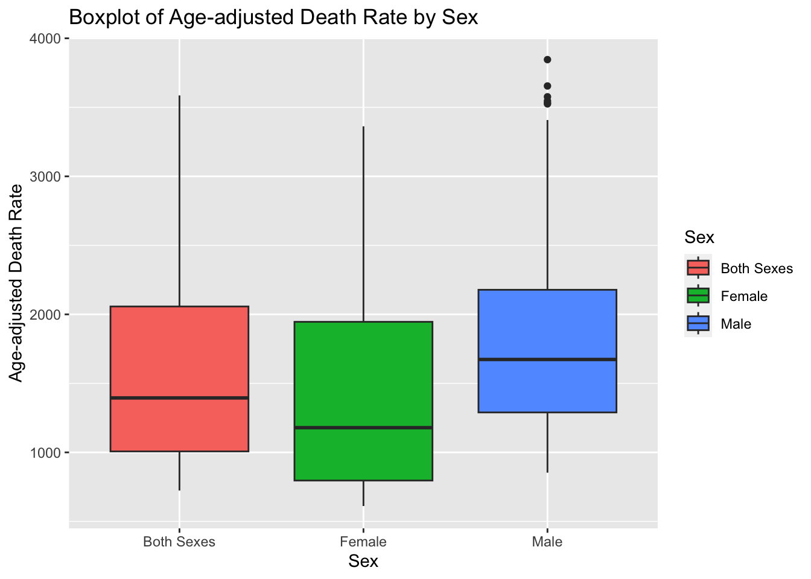

In this analysis, we will explore a dataset from the National Center for Health Statistics (NCHS) that contains information about death rates and life expectancy at birth. Our goal is to clean the data, perform exploratory data analysis (EDA), and summarize the variables by their distributions.
Load necessary libraries:
# Load necessary librarieslibrary(dplyr)
Attaching package: 'dplyr'
The following objects are masked from 'package:stats':
filter, lag
The following objects are masked from 'package:base':
intersect, setdiff, setequal, union
here() starts at /Users/srilakshmi/Documents/GitHub/sriganni-P2-portfolio
Read the data:
# Read the datafile_path <-here("cdcdata-exercise","NCHS_-_Death_rates_and_life_expectancy_at_birth_20240701.csv")data <-read_csv(file_path)
Rows: 1071 Columns: 5
── Column specification ────────────────────────────────────────────────────────
Delimiter: ","
chr (2): Race, Sex
dbl (3): Year, Average Life Expectancy (Years), Age-adjusted Death Rate
ℹ Use `spec()` to retrieve the full column specification for this data.
ℹ Specify the column types or set `show_col_types = FALSE` to quiet this message.
Display the first few rows of the dataset:
head(data)
# A tibble: 6 × 5
Year Race Sex Average Life Expectancy (Y…¹ Age-adjusted Death R…²
<dbl> <chr> <chr> <dbl> <dbl>
1 1900 All Races Both Sexes 47.3 2518
2 1901 All Races Both Sexes 49.1 2473.
3 1902 All Races Both Sexes 51.5 2301.
4 1903 All Races Both Sexes 50.5 2379
5 1904 All Races Both Sexes 47.6 2502.
6 1905 All Races Both Sexes 48.7 2424.
# ℹ abbreviated names: ¹`Average Life Expectancy (Years)`,
# ²`Age-adjusted Death Rate`
Check the structure of the dataset:
str(data)
spc_tbl_ [1,071 × 5] (S3: spec_tbl_df/tbl_df/tbl/data.frame)
$ Year : num [1:1071] 1900 1901 1902 1903 1904 ...
$ Race : chr [1:1071] "All Races" "All Races" "All Races" "All Races" ...
$ Sex : chr [1:1071] "Both Sexes" "Both Sexes" "Both Sexes" "Both Sexes" ...
$ Average Life Expectancy (Years): num [1:1071] 47.3 49.1 51.5 50.5 47.6 48.7 48.7 47.6 51.1 52.1 ...
$ Age-adjusted Death Rate : num [1:1071] 2518 2473 2301 2379 2502 ...
- attr(*, "spec")=
.. cols(
.. Year = col_double(),
.. Race = col_character(),
.. Sex = col_character(),
.. `Average Life Expectancy (Years)` = col_double(),
.. `Age-adjusted Death Rate` = col_double()
.. )
- attr(*, "problems")=<externalptr>
Clean the data:
Remove any rows with NA values:
data <- data %>%filter_all(any_vars(!is.na(.)))
Replace missing values coded as 999 with NA:
data <- data %>%mutate_if(is.numeric, ~na_if(., 999))
Select a few variables for analysis (adjust based on actual variable names in the dataset):
selected_data <- data %>%select(Year, Sex, Race, "Average Life Expectancy (Years)", "Age-adjusted Death Rate")
Exploratory Data Analysis (EDA):
Summary statistics:
summary(selected_data)
Year Sex Race
Min. :1900 Length:1071 Length:1071
1st Qu.:1929 Class :character Class :character
Median :1959 Mode :character Mode :character
Mean :1959
3rd Qu.:1989
Max. :2018
Average Life Expectancy (Years) Age-adjusted Death Rate
Min. :29.1 Min. : 611.3
1st Qu.:57.1 1st Qu.:1013.0
Median :66.8 Median :1513.7
Mean :64.5 Mean :1593.1
3rd Qu.:73.9 3rd Qu.:2057.2
Max. :81.4 Max. :3845.7
NA's :6
Summary of categorical variables:
We’ll start by summarizing the categorical variables (Sex and Race) by showing the percentage of each category.
# A tibble: 3 × 3
Sex count percentage
<chr> <int> <dbl>
1 Both Sexes 357 33.3
2 Female 357 33.3
3 Male 357 33.3
print(cat_summary_race)
# A tibble: 3 × 3
Race count percentage
<chr> <int> <dbl>
1 All Races 357 33.3
2 Black 357 33.3
3 White 357 33.3
Sex Distribution: The dataset is evenly distributed across the sex categories: Both Sexes, Female, and Male. Each category represents 33.33% of the total dataset with 357 entries each. This balanced representation ensures an unbiased analysis across sexes.
Race Distribution: The dataset is equally divided among the race categories: All Races, Black, and White, with each category comprising 33.33% of the total dataset (357 entries each). This equal distribution ensures comprehensive analysis across races.
# A tibble: 9 × 4
Sex Race count percentage
<chr> <chr> <int> <dbl>
1 Both Sexes All Races 119 11.1
2 Both Sexes Black 119 11.1
3 Both Sexes White 119 11.1
4 Female All Races 119 11.1
5 Female Black 119 11.1
6 Female White 119 11.1
7 Male All Races 119 11.1
8 Male Black 119 11.1
9 Male White 119 11.1
Continuous Variables:
Next, we’ll summarize the continuous variables (Age-adjusted Death Rate and Average Life Expectancy (Years)) by plotting their distributions and calculating their mean and standard deviation.
Plot distribution of age-adjusted death rate:
ggplot(selected_data, aes(x =`Age-adjusted Death Rate`)) +geom_histogram(binwidth =50, fill ="blue", color ="black") +labs(title ="Distribution of Age-adjusted Death Rates", x ="Age-adjusted Death Rate", y ="Frequency")

The histogram shows age-adjusted death rates ranging from 0 to 4000, with the highest frequencies. The frequency decreases as the death rate increases, indicating fewer occurrences at higher death rates.This visualization helps identify the concentration and spread of death rates within the population, highlighting areas with the most common and least common death rates.
Summary statistics for age-adjusted death rate:
death_rate_summary <- selected_data %>%summarize(mean =mean(`Age-adjusted Death Rate`, na.rm =TRUE),sd =sd(`Age-adjusted Death Rate`, na.rm =TRUE))print(death_rate_summary)
# A tibble: 1 × 2
mean sd
<dbl> <dbl>
1 1593. 682.
The summary statistics table provides the mean and standard deviation for the age-adjusted death rates. The mean age-adjusted death rate is approximately 1593.06, with a standard deviation of 682.37. This indicates that the average death rate is around 1593 deaths per 100,000 population, with considerable variability across the dataset.
Plot distribution of Average life expectancy(Years):
ggplot(selected_data, aes(x =`Average Life Expectancy (Years)`)) +geom_histogram(binwidth =1, fill ="green", color ="black") +labs(title ="Distribution of Life Expectancy", x ="Life Expectancy (Years)", y ="Frequency")
The histogram illustrates the distribution of average life expectancy in the dataset, ranging from approximately 30 to 85 years. The frequency peaks around 70 years, indicating a higher number of occurrences in this range. This visualization helps identify the spread and concentration of life expectancy across the population, highlighting areas with the highest and lowest frequencies.
Summary statistics for Average life expectancy:
life_expectancy_summary <- selected_data %>%summarize(mean =mean(`Average Life Expectancy (Years)`, na.rm =TRUE),sd =sd(`Average Life Expectancy (Years)`, na.rm =TRUE))print(life_expectancy_summary)
# A tibble: 1 × 2
mean sd
<dbl> <dbl>
1 64.5 11.8
The summary statistics table for average life expectancy shows a mean of 64.50 years and a standard deviation of 11.84 years. This indicates that the average life expectancy in the dataset is approximately 64.5 years, with a variability of about 11.8 years across the data points.
Boxplots:
We’ll also create boxplots to visualize the distribution of Age-adjusted Death Rate by Sex and Average Life Expectancy (Years) by Race.
Boxplot of age-adjusted death rate by sex:
ggplot(selected_data, aes(x = Sex, y =`Age-adjusted Death Rate`, fill = Sex)) +geom_boxplot() +labs(title ="Boxplot of Age-adjusted Death Rate by Sex", x ="Sex", y ="Age-adjusted Death Rate")

The boxplot shows the distribution of age-adjusted death rates across different sex categories: Both Sexes, Female, and Male.
1.The median death rate for Both Sexes and Females is lower compared to Males.
2.The interquartile range (IQR) is similar for Both Sexes and Females but slightly larger for Males, indicating more variability in the male category.
3.There are several outliers in the Male category, suggesting that there are some instances of unusually high death rates.
This visualization highlights the differences in death rates among the sex categories, with males showing higher median and more variability in death rates.
Boxplot of life expectancy by race:
ggplot(selected_data, aes(x = Race, y =`Average Life Expectancy (Years)`, fill = Race)) +geom_boxplot() +labs(title ="Boxplot of Average Life Expectancy by Race", x ="Race", y ="Average Life Expectancy (Years)")